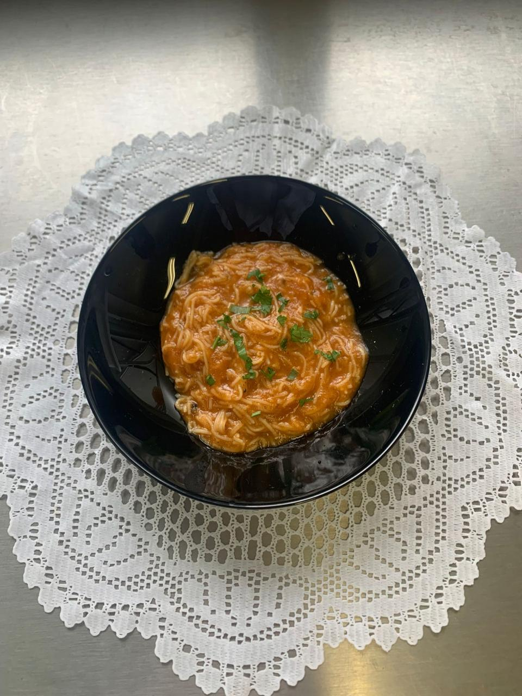

- 78g de casca de cenoura;
- 85g de casca de cebola;
- 18g de salsa;
- 80g de macarrão do tipo Cabelinho de Anjo;
- 790g de frango com osso;
- 15ml de azeita extra virgem;
- 2L de água.
Modo de preparo: Separe o peito do frango da carcaça e reserve; Retire cascas e aparas da cenoura e cebola para reservar e corte o restante dos vegetais em pedaços grandes;
Separe a salsa e lave bem, depois pique e a reserve; Aqueça a panela com azeite e adicione a carcaça de frango para selar;
Depois de selar, acrescente a cenoura, a cebola e a salsa e mexa um pouco;
Adicione os 2 litros de água na panela e mantenha em fervura por 1 a 2 horas;
Após esse tempo, separe o líquido das aparas utilizando uma peneira;
Após esse tempo, separe o líquido das aparas utilizando uma peneira;
Cozinhe por 3 minutos e sirva-se.
Voltar